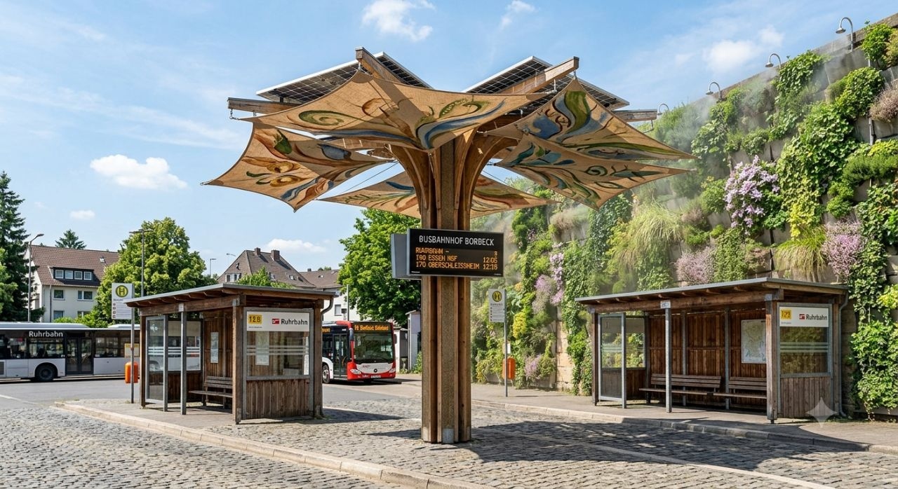
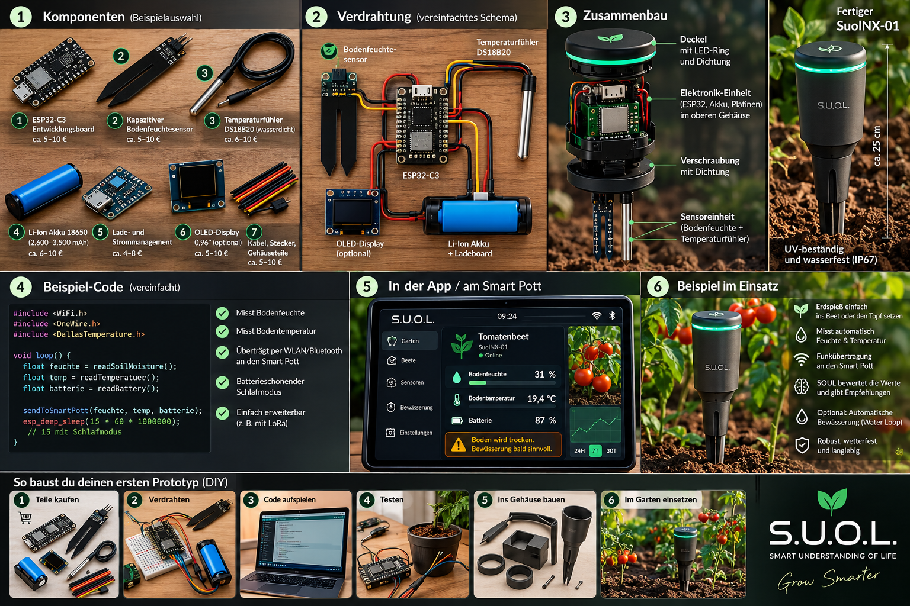
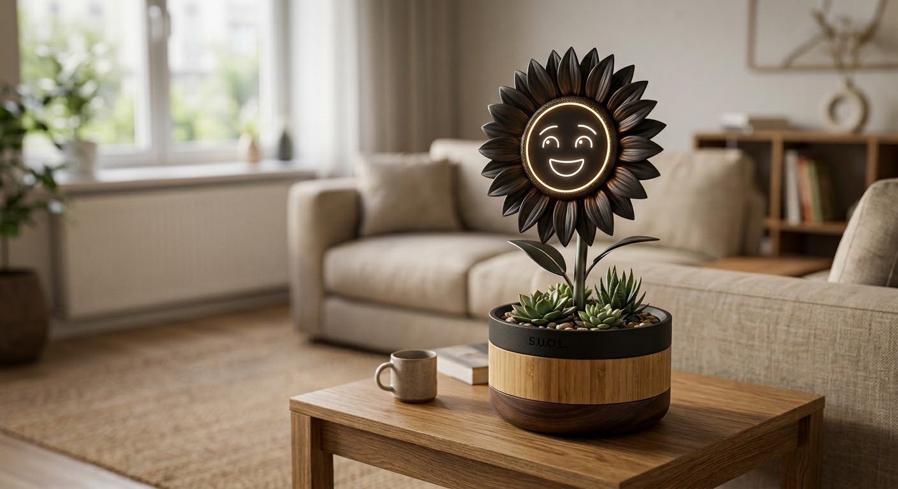
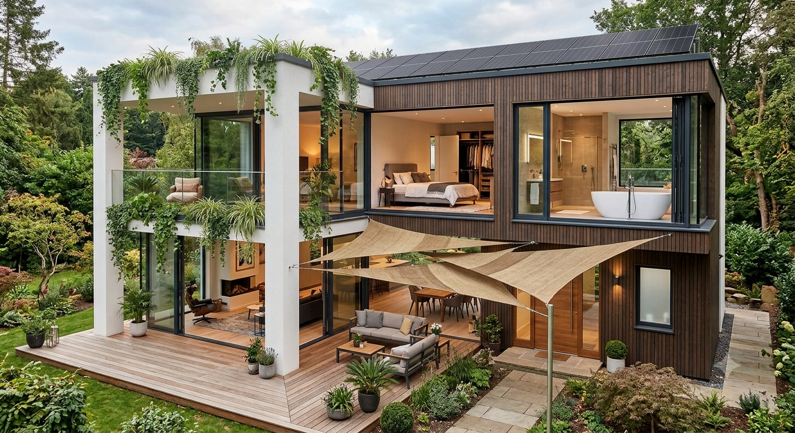
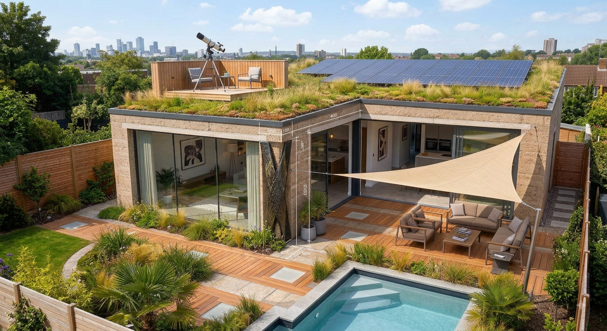
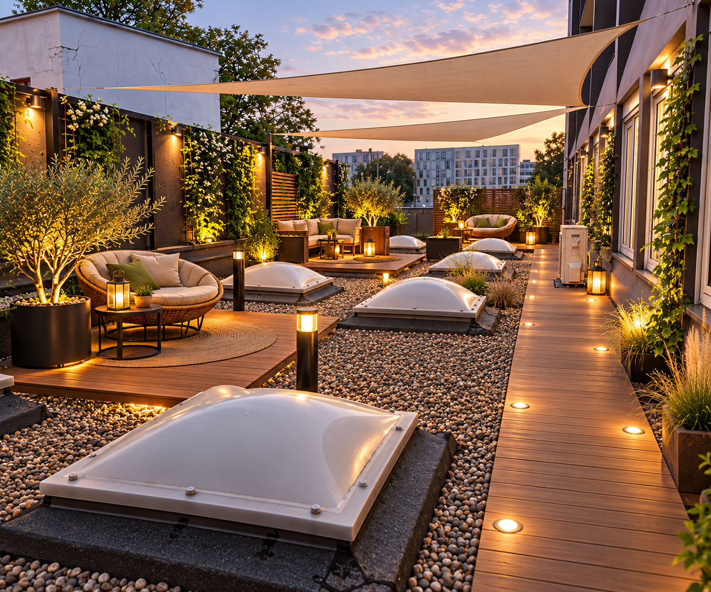
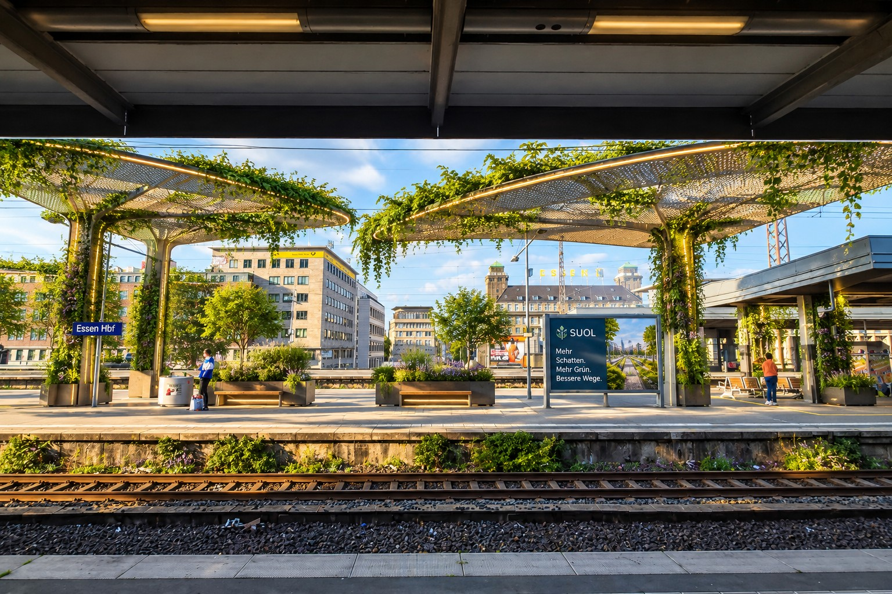
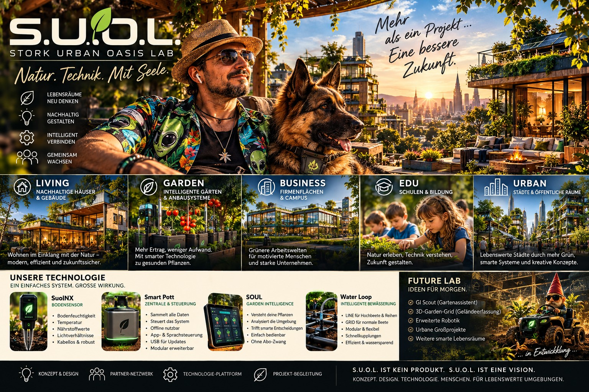

SuolNX
Erfasst Zustände direkt an Pflanze und Boden.

URBAN NATURE × INTELLIGENCE × DESIGN
S.U.O.L. verbindet Natur, Gestaltung und intelligente Technologie – vom ersten Sensor bis zur urbanen Oase.

DAS IST S.U.O.L.
Eine Idee aus dem Ruhrgebiet: lebendige Räume, die Natur nicht als Dekoration behandeln, sondern als Teil eines intelligenten Systems.
STORK URBAN OASIS LAB / ORIGINAL MARK59 SEKUNDEN S.U.O.L.
Vom Sensor bis zum Lebensraum: der S.U.O.L.-Gedanke in Bewegung.
DAS ÖKOSYSTEM
Die Module greifen ineinander – ohne dass der Mensch zum Systemadministrator seines Gartens werden muss.
Erfasst Zustände direkt an Pflanze und Boden.
Verbindet Sensorik, Steuerung und Schnittstellen.
Macht aus Messwerten verständliche Informationen.
Versorgt gezielt die Zone, die Wasser braucht.

SUOLNX / FIELD NODE
Sensoren liefern die Grundlage. Die Technik soll dabei nicht dominieren, sondern helfen, den Zustand des Gartens verständlich zu machen.
SMART POTT / LOCAL HUB
Eine lokale Zentrale für Sensorik, Steuerung und Schnittstellen – als Teil eines Systems, das Schritt für Schritt entwickelt und getestet wird.
PROTOTYPE / DEVELOPMENT
BIGGER THAN A GARDEN



URBAN / ESSEN / PUBLIC SPACE
Auch öffentliche Räume gehören zur S.U.O.L.-Vision: ein Blick darauf, wie aus grauer Infrastruktur ein lebenswerterer Ort werden kann.

HOME / GARDEN / LIFE
Sie soll im Hintergrund arbeiten – damit vorne das bleibt, worum es eigentlich geht: Garten, Ruhe und Lebensraum.

S.U.O.L. / FUTURE LAB
Manche Ideen zeigen sich erst, wenn man genauer hinsieht.
STORK URBAN OASIS LAB
Konzept, Design und ein wachsendes Technologie-Ökosystem. Fachplanung, Bau, Installation und Gartenbau erfolgen mit qualifizierten Partnern.
NEXT SITE
Natur. Technik. Mit Seele.